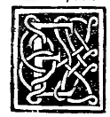

CAPITEL LII¶
Vom ebenen vollen oder hohlen, und vom abgeschnittenen vollen oder hohlen, und vom erhöhten vollen oder hohlen und abgeschnittenen erhöhten vollen oder hohlen Dodekaeder, und seiner Erzeugung oder Abhängigkeit.

Das ebene volle oder hohle Dodekaeder hat 30 gleiche Linien oder Seiten, die darin 60 ebene Winkel erzeugen, und hat 20 Ecken und zwölf Grund- oder Oberflächen, die es enthalten, und diese sind sammtlich Pentagone von unter sich durchweg gleichen Seiten und Winkeln, wie erhellt.
Das geköpfte oder abgeschnittene ebene volle oder hohle Dodekaeder hat 60 Linien; alle von gleicher Länge und hat 120 ebene Winkel und 30 Ecken. Aber von den 120 ebenen sind 60 Dreiecks- und 60 Fünfeckswinkel. Und jene Dreiecke werden mit Nothwendigkeit aus besagten Pentagonen veranlasst, wenn man diese eckenweise unter einander verbindet, wie es bei der Erzeugung der abgeschnittenen des Tetraeders und Oktaeders gesagt worden, welche aus Sechs-, Vier- und Dreiecken, und ebenso beim abgeschnittenen Ikosaeder aus Sechs- und Fünfecken gebildet wurden, wie es die materielle Figur zeigt.
Und jede der besagten Ecken ist gebildet und enthalten von vier ebenen Winkeln, wovon zwei aus Dreiecken und zwei aus in ein und demselben Punkte zusammenlaufenden Pentagonen angehören. Und alle seine Linien oder Seiten sind den Dreiecken und Pentagonen gemeinsam, weil wenn das eine und die anderen in richtiger Art angebracht werden, das eine die Ursache des andern ist, d, h. die Dreiecke von den Pentagonen und die Pentagone von den Dreiecken. Und sowie die zwölf gleichseitigen Pentagone, eckenweise verbunden, im genannten Körper 20 Dreiecke ergeben, so können wir auch noch sagen, dass 20 Dreiecke eckenweise mit einander verbunden, zwölf ebenfalls gleichseitige Pentagone erzeugen. Und daraus erhellt, dass alle besagten Linien unter ihnen gemeinsam seien, wie gesagt worden.
Und der sie ureigebenden Flächen sind 32, wovon zwölf gleichseitige und gleichwinklige Pentagone und 20 ebenfalls gleichseitige Dreiecke sind, alle unter einander wechselweise erzeugt, wie wir angegeben haben, und wie seine materielle Form offenbart. — Und dieser geht aus dem Vorhergehenden hervor, indem er in der Mitte jeder seiner Seiten gleichmässig abgeschnitten.
Das erhöhte volle oder hohle Dodekaeder hat 90 Linien und 180 ebene Winkel und von körperlichen zwölf erhabene pyramidale fünfseitige, und hat ferner 20 körperliche sechsseitige Grundflächen, i) Und es hat 60 Oberflächen, alle dreieckig, gleichseitig und gleichwinklig. Aber von den genannten 90 Linien sind zwölf den zwölf Basen der fünfseitigen Pyramiden gemeinsam, deren Grundflächen gleichfalls pentagonisch sein müssen. Und diese sind die Grenzflächen des Innern regelmässigen Dodekaeders, welches zu seiner Zusammensetzung dient, und das der Verstand allein mittelst der Einbildungskraft erfasst,und nur diese 30 gemeinsamen Linien treten zur Erzeugung der 20 eingedrückten Ecken zusammen, die, wie gesagt, sechseckig sind, d. h., dass zu ihrer Bildung sechs Linien beitragen.
Und es wird besagter Körper vom innern vorgenannten regulären Dodekaeder und von zwölf kantigen fünfseitigen gleichseitigen und gleichwinkligen Pyramiden von gleicher Höhe gebildet. Und ihre Grundflächen sind dieselben Grundflächen des innern, wie vorher gesagt.
Das abgeschnittene erhabene volle oder hohle Dodekaeder hat Seiten oder Linien der Zahl nach 180, wovon 60 erhoben sind zur Erzeugung der fünfseitigen Pyramiden, 60 sind zur Constitution der dreiseitigen Pyramiden erhoben, die andern 60 sind niedere: sammtliche Seiten von den genannten Pyramiden, d. h. der Pentagone und Dreiecke. Und dieser so gestaltete Körper setzt sich aus dem ebenen alygeschnittenen innern Dodekaeder zusammen, welches allein durch die Einbildungskraft dem Verstände sich bietet, und aus 32 Pyramiden, wovon zwölf fünfseitig sind und unter sich von gleicher Höhe. Und die andern 20 sind dreiseitig, ebenfalls von unter einander gleicher Höhe.
Und die Grundflächen dieser Pyramiden sind die Oberflächen des genannten abgestumpften Dodekaeders, indem sich Jede auf die zu ihr gehörigen, d. h. die dreieckigen auf die dreiseiiigen Pyramiden, und die fünfeckigen auf die pentagonisclien Pyramiden beziehen. Und in der Stellung auf die Ebene ruht es immer auf sechs Punkten oder pyramidalen Spitzen, i) von welchen Spitzen eine von der fünfseitigen und die andern fünf von den dreiseitigen Pyramiden herrühren.
Dies in der Luft Schweben scheint dem Auge als etwas Widersinniges, dass es ähnliche Spitzen und eine (davon verschiedene) seien. Und es ist dies, erhabener Herzog, von grosser Abstraction und tiefer Wissenschaft, und ich weiss, wer es begreift, wird mich sicherlich nicht Lügen strafen. Und zu seiner Ausmessung gelangt man mittelst der subtilsten Praxis, besonders der Algebra und Alraukabala, die nur Wenigen bekannt und von uns in unserm Werke gut nachgewiesen, mit Anweisungen, sie leicht erlernen zu können.
Und ähnlicherart verhält es sich mit der Ausmessung des abgeschnittenen Ikosaeders, in welchem Sechs • und Fünfecke mit einander wechseln, welche alle die Messungen kennen lehren.